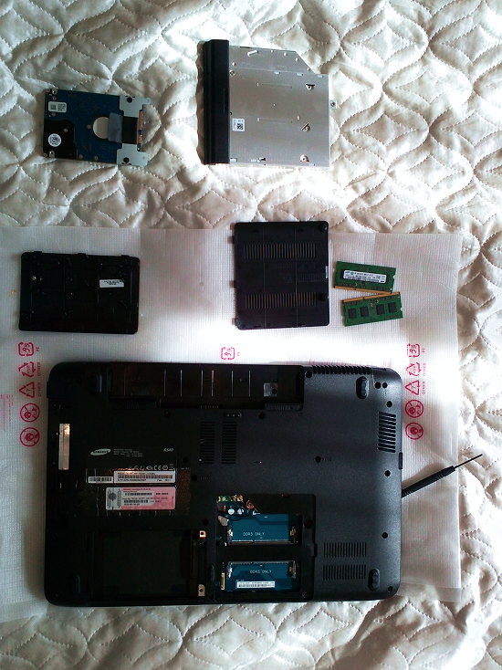
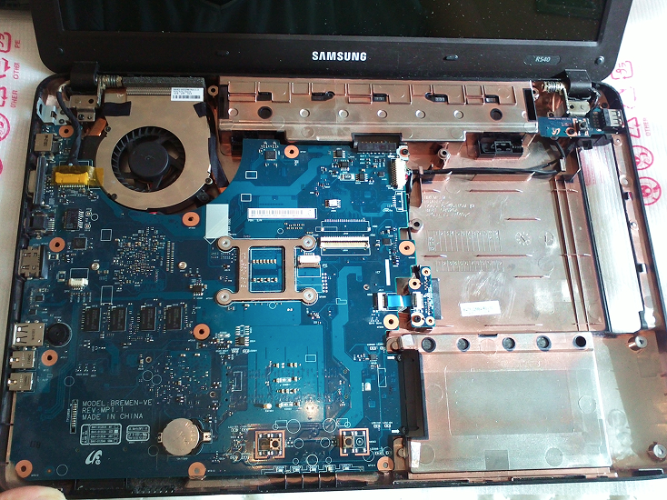

+7 (999) 217-27-**
Позвонить
Детство… Третий класс. Мама приходит домой и сообщает: дети, к нам сейчас приедут устанавливать компьютер. Радости-то сколько было! Мы с братом носились по квартире распевая и прикрикивая, что у нас будет компьютер. Так, мобильные технологии впервые ворвались в мою жизнь.
Прошло несколько лет, стационарный компьютер стал уже не таким популярным в нашем доме. Брату купили ноутбук, поэтому Пентиум второй достался мне. Медленно работал процессор, частенько «летел» антивирусник. Брат все реже брался за обслуживание моего «старичка». В конце концов, и вовсе отказался от помощи. По неопытности я потеряла много информации на компе. Стоит отметить, мне тогда было 14. Я впервые снесла винду и думала, что мой комп больше никогда не очнется. Переустановив с третьего раза оперативку, я поняла, что все оказалось не так страшно, как я себе представляла. С того момента я стала проще общаться с компьютером.
После ухода брата в армию, я пробовала поработать за его ноутбуком, но мама считала, что со мной ноут долго не протянет. И вообще все говорили, что с техникой я не дружу (техника в доме действительно страдала, ведь всегда нужно было пересобрать все заново, что частенько мне не удавалось). Так вот, братнин комп был недолго в моей власти. Вскоре мне решили купить мой личный (вы слышите? ЛИЧНЫЙ) ноутбук. О нем я мечтала всю жизнь (неправда конечно, ведь новые технологии появились не так давно). Мне даже дано было право выбрать его самой. При помощи консультанта (я ведь девушка, сама не справлюсь) я определилась. Остановилась на модели Sumsung. Отныне я стала полноправной владелицей своего «ноутика».
Шло время, на мой взгляд, все было в порядке: я не беспокоилась о возможных проблемах моего ноутбука, да и с обслуживанием затягивала. И вот однажды, два года спустя, я, наконец, поняла, что ноут больше не может так жить, ему пора обновиться. Но, прежде чем идти к специалисту, решила-таки сама все разобрать (как всегда). Аккуратненько, открыв инструкцию по разборке, я приступила к действию. Сделав все по пунктам, немного отстранившись, я посмотрела на то, что получилось. Мой ноутбук оказался просто удивительным внутри. Вся его конструкция, каждая непонятная мне деталь, каждый проводочек и разъем – все это так завораживало. Все было жутко интересно. И ведь меня даже не пугало, что я потом его никак не соберу обратно и, что он у меня даже не включится. В тот самый момент я поняла одну очень важную для меня вещь: я хочу этим заниматься, мне нравится внутреннее устройство/строение ноута, нравится то, что я делаю. Что я хочу научиться все это собирать, обслуживать и даже создавать. Может быть с того момента у меня и зародилась мечта: стать сотрудником корпорации по производству, сборке и обслуживанию электронных устройств.
Смешно? Это может показаться смешным, но ведь с того дня я стала делать все возможное для этого. И, надеюсь, я на верном пути. «И что же ты сделала?» – спросите вы. Я поэтапно распланировала путь к достижению своей мечты. Из провинциального городка я сумела поступить на бюджет в один из ведущих вузов страны, в СПбГУ по специальности современные компьютерные технологии в электрофизике и физике плазмы. Вы только представьте себе, каких усилий мне это стоило. «Что девушка забыла на физфаке?», «девушка-технарь?», «лучше выйди замуж, сиди дома и расти детей», – говорили мне знакомые. Быть одной в чужом городе, далеко от дома, от семьи. Я рискнула. Взяла себя в руки, подала документы на ту специальность, которую хотела. И ведь поступила! Этот телефонный звонок: «Назиля Фанисовна? Здравствуйте, Вас беспокоят с приемной комиссии СПбГУ. Мы звоним Вам сообщить, что вы проходите по конкурсу на бюджет». Восторженный вопль на всю квартиру: «Я поступила! У меня получилось!», – так я еще никогда не радовалась. Я смогла, я сделала первый шаг на пути к своему успеху.
Сейчас я студентка первого курса, учусь по специальности электрофизика. Мне здесь безумно нравится. Работа на кафедре радиофизики очень увлекательная. Уже позади пробная конференция по курсовым работам, много лабораторных. Но больше всего мне по душе работа с компьютерами, с пакетами программ, таких как MatLab/Simulink, ANSYS.
И ведь это только начало, начало моего будущего, моей взрослой жизни. А ведь все началось тогда, в семнадцать, с разборки моего ноутбука. Мой первый шаг, первый этап пройден. Осталось не так уж и много. И я верю, что у меня все получится, что я сумею достичь своей цели.
Спасибо за внимание!
23.08.2013
P.S: ни один ноутбук от моих экспериментов не пострадал ;)